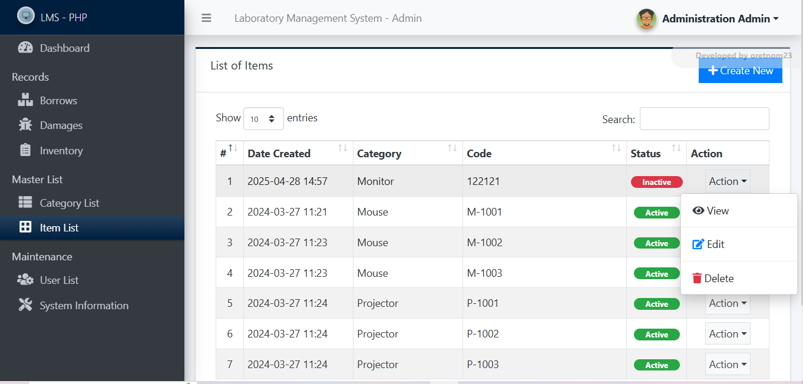
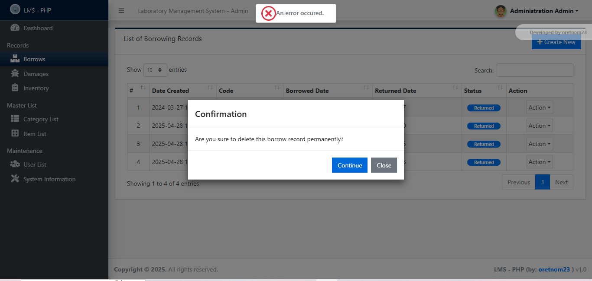
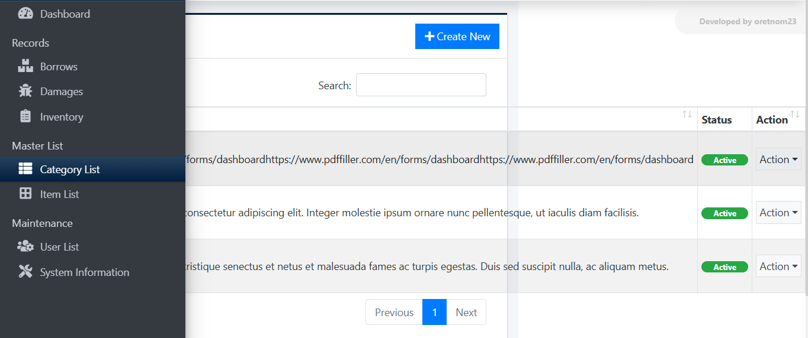
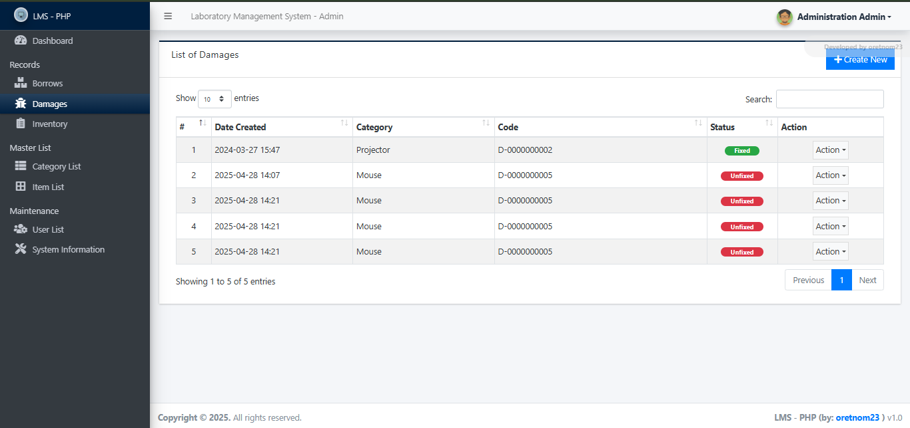

UI Improvements
Improvement 1: Replace Dropdown Action Buttons with Visible Buttons
Justification: According to the heuristics of Visibility of System Status and User Control and Freedom, replacing dropdown action buttons with visible buttons improves discoverability and reduces user confusion, providing immediate access to common actions.
Improvement 2: Provide Undo Option for Destructive Actions
Justification: Providing an undo option aligns with the heuristic of User Control and Freedom, allowing users to recover from mistakes and reducing anxiety about performing destructive actions.
Improvement 3: Accommodate Long Descriptions in Category Management
Justification: Following the heuristic of Match Between System and the Real World, accommodating long descriptions ensures that the system reflects real-world data accurately and improves user satisfaction by preventing truncation or loss of information.
Improvement 4: Provide Feedback on Successful Add/Delete Actions
Justification: Consistent with the heuristic of Visibility of System Status, providing clear feedback after add or delete actions informs users that their actions were successful, reducing confusion and preventing repeated attempts.